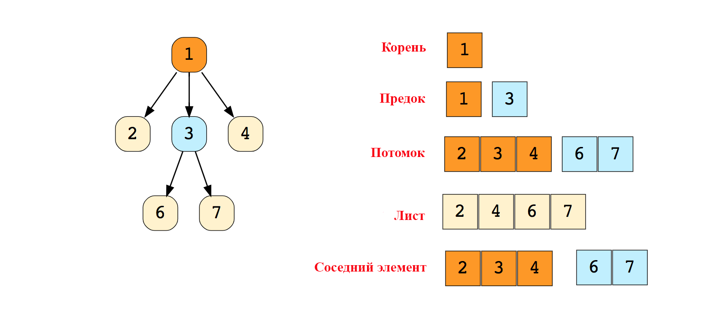
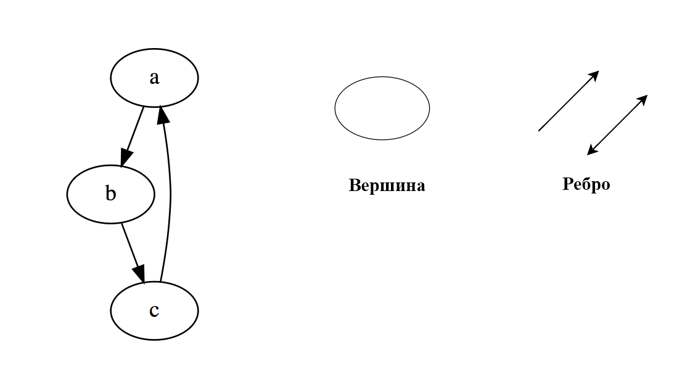
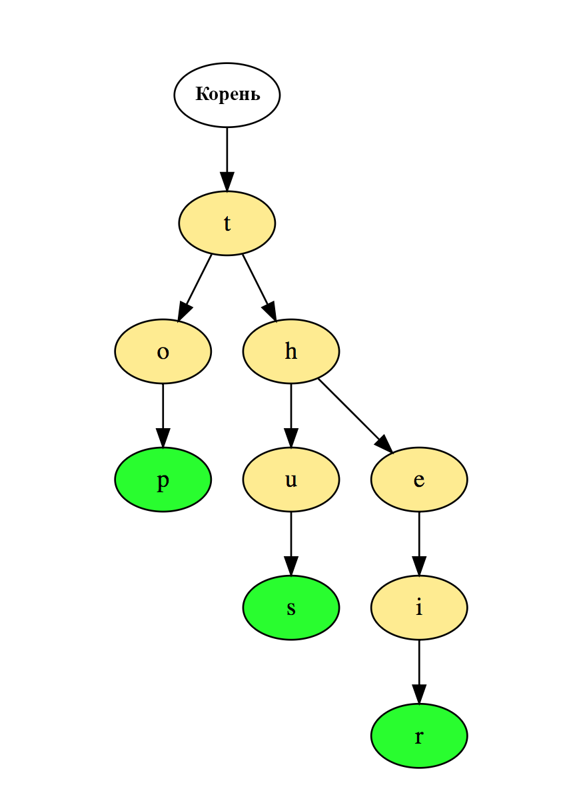

НАЗАД
Структуры данных
Структура данных- это контейнер, информация в котором скомпонована характерным образом. Для каждой задачи-
необходима своя.
- Массивы- это простейшая и наиболее распространенная структура данных. Стеки и очереди, производны от
массивов.
Есть два типа:
- Одномерные.
- Многомерные- которые содержат другие массивы.
Операции с массивами:
- Insert — вставляем элемент на позицию с заданным индексом
- Get — возвращаем элемент, занимающий позицию с заданным индексом
- Delete — удаляем элемент с заданным индексом
- Size — Получаем общее количество элементов в массиве
- Стеки- линейная структура где все храниться в виде последовательной стопки (LIFO). Пример: Ctrl+Z или
Stack память JAVA.
Операции со стеками:
- Push — Вставляет элемент в стек сверху
- Pop — Возвращает верхний элемент после того, как удалит его из стека
- isEmpty — Возвращает true, если стек пуст
- Top — Возвращает верхний элемент, не удаляя его из стека
- Очереди- линейная структура как стек но по принципу FIFO
Операции со очередями:
- Enqueue() — Добавляет элемент в конец очереди
- Dequeue() — Удаляет элемент из начала очереди
- isEmpty() — Возвращает true, если очередь пуста
- Top() — Возвращает первый элемент в очереди
- Связные списки- линейная структура данных, похожа на массив. Отличается от массива по выделению
памяти, внутренней структуре и процессу выполнения операции вставки и удаления. Состоит из цепочки
узлов(Данные и ссылка на следующий элемент).
Есть головной указатель, соответствующий первому элементу в связном списке, и, если список пуст, то он
направлен просто на null.
Есть два типа:
- Односвязный список (однонаправленный).
- Двусвязный список (двунаправленный).
Операции со связными списками:
- InsertAtEnd — Вставляет заданный элемент в конце связного списка
- InsertAtHead — Вставляет заданный элемент в начале (с головы) связного списка
- Delete — Удаляет заданный элемент из связного списка
- DeleteAtHead — Удаляет первый элемент в связном списке
- Search — Возвращает заданный элемент из связного списка
- isEmpty — Возвращает true, если связный список пуст
- Деревья- это иерархическая структура данных, состоящая из вершин (узлов) и ребер, которые их
соединяют. Деревья подобны графам, однако, ключевое отличие дерева от графа таково: в дереве не бывает
циклов.

Типы:
- N-арное дерево.
- Сбалансированное дерево.
- Двоичное дерево.
- Двоичное дерево поиска.
- АВЛ-дерево.
- Красно-черное дерево.
- 2—3 дерево.
- Графы- это множество узлов, соединенных друг с другом в виде сети. Узлы также называются вершинами.
Пара (x,y) называется ребром, это означает, что вершина x соединена с вершиной y. Ребро может иметь
вес/стоимость — показатель, характеризующий, насколько затратен переход от вершины x к вершине y.

Есть два типа:
- Неориентированный граф.
- Ориентированный граф.
В языке программирования графы могут быть двух видов:
- Матрица смежности.
- Список смежности.
Распространенные алгоритмы обхода графа:
- Поиск в ширину
- Поиск в глубину.
- Боры(префиксное дерево)- это древовидная структура данных, которая особенно эффективна при решении
задач на строки. Она обеспечивает быстрое извлечение данных и чаще всего применяется для поиска слов в
словаре, автозавершений в поисковике и даже для IP-маршрутизации.
Вот как три слова «top» (верх), «thus» (следовательно), and «their» (их) хранятся в бору:

- Хеш-таблицы- Хеширование — это процесс, применяемый для уникальной идентификации объектов и
сохранения каждого объекта по заранее вычисленному индексу, именуемому его «ключом». Таким образом, объект
хранится в виде «ключ-значение», а коллекция таких объектов называется «словарь». Каждый объект можно искать
по его ключу. Существуют разные структуры данных, построенные по принципу хеширования, но чаще всего из
таких структур применяется хеш-таблица.